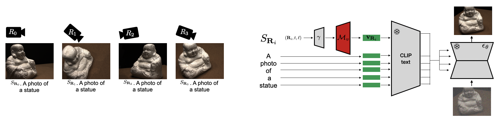
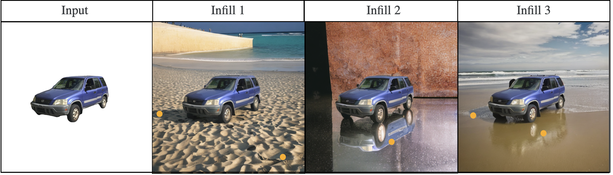
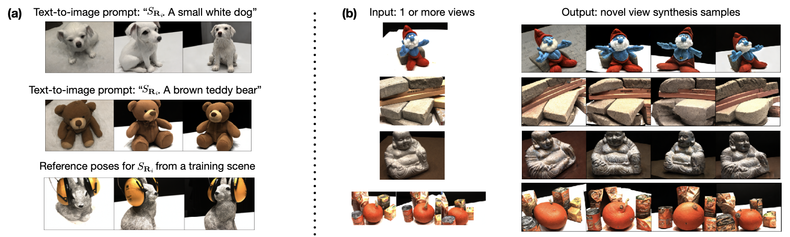

Abstract
Text-to-image diffusion models generate impressive and realistic images, but do they learn to represent the 3D world from only 2D supervision? We demonstrate that yes, certain 3D scene representations are encoded in the text embedding space of models like Stable Diffusion. Our approach, Viewpoint Neural Textual Inversion (ViewNeTI), is to discover 3D view tokens; these tokens control the 3D viewpoint -- the rendering pose in a scene -- of generated images. Specifically, we train a small neural mapper to take continuous camera viewpoint parameters and predict a view token (a word embedding). This token conditions diffusion generation via cross-attention to produce images with the desired camera viewpoint. Using ViewNeTI as an evaluation tool, we report two findings: first, the text latent space has a continuous view-control manifold for particular 3D scenes; second, we find evidence for a generalized view-control manifold for all scenes. We conclude that since the view token controls the 3D 'rendering' viewpoint, there is likely a scene representation embedded in frozen 2D diffusion models. Finally, we exploit the 3D scene representations for 3D vision tasks, namely, view-controlled text-to-image generation, and novel view synthesis from a single image, where our approach sets state-of-the-art for LPIPS.
Two key findings about 3D control in the text input space
Finding 1 (figure below, left): the text input space has a continuous view-control manifold.
Evidence: using just 6 views of one scene, we learn to generate 3D view tokens that interpolate to novel views.Finding 2 (figure below, right): the text input space likely has a semantically disentangled view control manifold, meaning the same 3D view token can generalize to many scenes.
Evidence: we learn 3D view tokens across 88 scenes in DTU, and it generalizes to new scenes. Specifically, we use it to do novel view synthesis from a single image.
Our approach: learn a small network to predict 3D view tokens
We learn a small neural mapping network that takes camera parameters and predicts a `3D view token’. We then add the 3D view token to a text prompt to generate the image in that viewpoint. The train the network with Textual inversion.
In the figure below, the camera parameters are a vector, $R_i$, and we also condition on the diffusion timestep, $t$, and the UNet layer $\ell$. This is for "finding 1", and for "finding 2", we also predict a token for each object (see the paper).

Conclusion: 2D models have 3D representations in their text space
Since we kept the text-to-image diffusion model frozen, and we only learned a simple network, we conclude that text-to-image diffusion models likely have internal 3D scene representations. This might help explain why models like Stable Diffusion generate such compelling 3D features, like in this image below where infilling the background creates shadows that are consistent with the original object. A few other works study 3D representations from different perspectives - see Related Work below

Applications
1. View-controlled text-to-image generation.Add the 3D view token to a new text prompt to control the 3D viewpoint for new objects (sample results below, left).
2. Novel view synthesis from 1 image (or more images), with very good sample efficiency
By pretraining on 88 scenes from DTU or on 50 scenes from Objaverse, we can do single-image NVS (sample results below, right). Because we’re working through a pretrained diffusion model, the generated views have excellent photorealism and LPIPS. We also find that feed-forward methods like Zero-1-to-3 can’t learn any camera control on 50 scenes, and need 800k pretraining scenes to get good results (paper supplementary).

Related work
3D representations in 2D models have been investigated by a few works that probe Unet activations over many diffusion timesteps. Zhan et al. trains linear SVMs to predict 3D relations between two regions in the same image. Chen et al. train linear probes for depth and salient object / background segmentation, and also perform latent intervention during generation to alter geometric properties. El Banani et al. train a convolution network for estimating depth and surface normals, while also using latents for 2-image visual correspondence in zero-shot. By contrast, ViewNeTI (our work) studies 3D control in the word embedding space by learning `3D view tokens’.
In view-controlled text-to-image generation, a few concurrent works had some similar ideas. In Continuous 3D words, they control viewpoint as well as lighting and pose in the word embedding space, but also fine-tune Loras. Later, Kumari et al. adds camera control to model customization methods.
In novel view synthesis, the closest is DreamSparse, because they are interested in leveraging a pretrained diffusion models and learning few parameters for data efficiency, although they require at least 2 input views.
In terms of methods, our work uses textual inversion that was developed for diffusion model personalization, but we adapt it to 3D novel view synthesis. We use ideas and code from the recent Neural Textual Inversion (NeTI) model.
In hindsight ...
At the start of the project, we were mainly excited by the possibility that image diffusion models had learned an internal 3D model from 2D supervision. This was based on qualitative results like the car infilling we show above, which is the paper Fig.1. This seems to have been a good intuition, since other works like Zhan et al. showed a very similar figure as their motivation, and we later saw similar figures used in various talks. It’s also stated as a motivation in Zero-1-to-3.
Despite the motivation being understanding 3D representations, our earlier drafts emphasized the application to novel view synthesis (NVS). This seemed like the highest impact contribution: ViewNeTI is very sample efficient (learning to do single-image NVS from as few as 50 scenes); and it seemed very well-motivated to do NVS via a frozen diffusion model, since it enables you to leverage knowledge from the massive 2D pre-training datasets. The key advantage is that it reduces the reliance on large 3d datasets for multi view training, however we underestimated how willing the 3D vision community was to create and work with large 3D datasets, and overestimated their excitement for sample efficient methods (especially since our results have the best LPIPS but not the best PSNR compared to other methods that use NeRFs). On the other hand, there was a lot more interest in understanding 3D representations than we expected, which was the focus of our final paper.
We only identified view-controlled text-to-image generation as an application much later, and we were surprised to find that this is a very promising direction, with a few related works by Cheng et al. and Kumari et al.
BibTeX
@inproceedings{burgess2025viewpoint,
title={Viewpoint Textual Inversion: Discovering Scene Representations and 3D View Control in 2D Diffusion Models},
author={Burgess, James and Wang, Kuan-Chieh and Yeung-Levy, Serena},
booktitle={European Conference on Computer Vision},
pages={416--435},
year={2025},
organization={Springer}
}